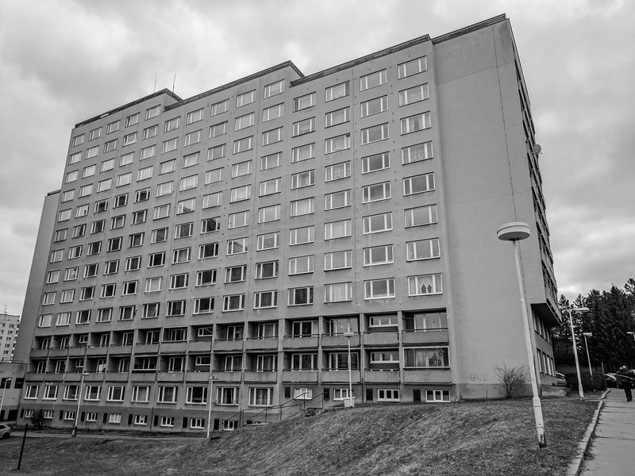

Vždy jsem si přál mít vlastní dům se zahradou. Vyrůstal jsem v malém bytě 2+1 na sídlišti spolu se 2 sourozenci. Neměli jsme vlastní dětský pokoj a náš byt byl pro pěti člennou rodinu docela malý. Nikterak zvlášť mi to nevadilo, byl jsem na to zvyklý a také jsme hodně času trávili u babičky s dědou. Přesto jsem vždycky toužil mít vlastní pokoj a bydlet na hezkém místě.

Po střední škole jsem se přestěhoval ze středních Čech do Brna kvůli studiu VŠ a postavil jsem se na vlastní nohy. Čtyři roky jsem bydlel na Kolejích pod Palackého vrchem. Během studií jsem potkal svou osudovou ženu a později jsme spolu začali bydlet v podnájmu. Po dokončení VŠ studia jsme se přestěhovali do družstevního bytu 2+kk, ve kterém bydlíme dodnes. V bytě se nám bydlí velmi dobře, ale bohužel není dostatečně velký pro rodinu. Z tohoto důvodu jsme začali uvažovat o novém bydlení.
Chtěl bych, aby naše děti vyrůstaly v rodinném domě na hezkém místě, aby měly vlastní pokoj a mohly si hrát na zahradě. Chtěl bych si dům postavit podle našich vlastních představ, využít moderní technologie současnosti a maximálně snížit provozní náklady. Nechci řadovku, ale samostatně stojící dům, který nám poskytne více soukromí. Možnost koupit již hotový dům v rámci developerského projektu jsme zavrhli, protože to většinou vyjde cenově nastejno a člověk se musí podřídit představám někoho jiného. Developeři navíc obvykle šetří na materiálech. Koupit starší dům a zrekonstruovat jej jsme také zavrhli, jelikož rekonstrukce bývá často stejně finančně či časově náročná jako stavba nového domu. Starší domy nejsou ani příliš úsporné na provoz. Preferujeme tedy novostavbu dle vlastního projektu na míru.
Po stavebních pozemcích v Brně a blízkém okolí jsem začal pokukovat cca před 2 roky. Později jsem si začal čím dál více uvědomovat, že najít pěkný pozemek nebude vůbec jednoduché.